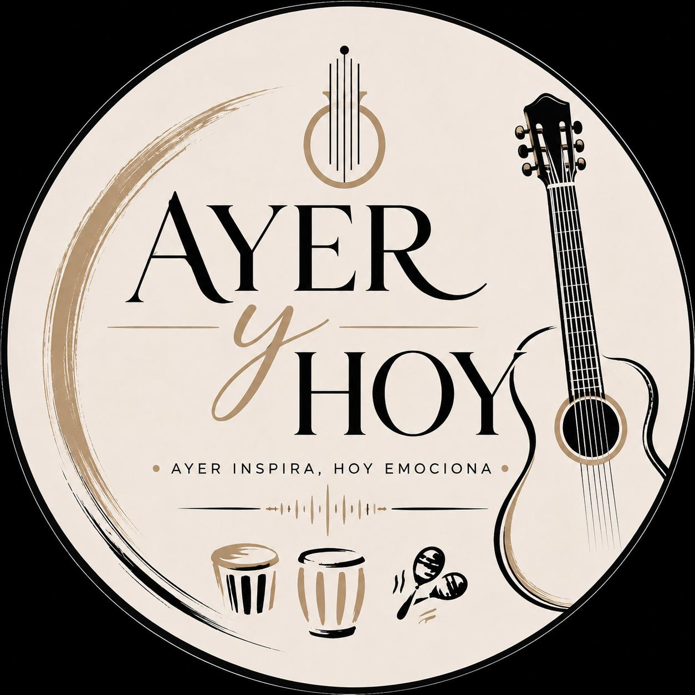

Proyecto musical
Ayer & Hoy
Jóvenes, cuerdas y raíces: una identidad musical que conecta generaciones.

¿Quiénes son Ayer & Hoy?
Ayer & Hoy es un grupo conformado por talentosos jóvenes que han encontrado en la música un propósito y un sentido de pertenencia hacia sus raíces.
Ellos no solo interpretan, sino que revitalizan géneros y estilos que han sido el alma de sus comunidades. Provenientes de barrios de Candelaria como Panamericano y Obrero, estos jóvenes han abrazado su identidad cultural y, a través de las cuerdas, dan voz a las tradiciones que han marcado generaciones.
Fundador y director
Miguel Delgado
Miguel es el fundador y director de Ayer & Hoy, un proyecto que reúne juventud, música de cuerda y orgullo por las raíces culturales.
El grupo
Música que une generaciones